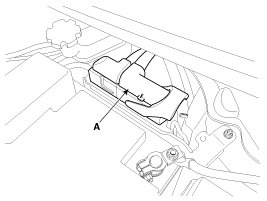
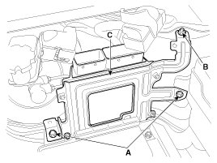
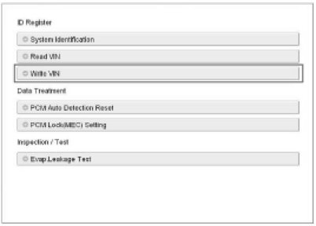
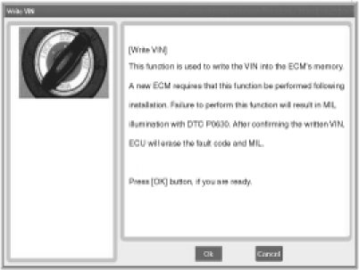

Engine Control Module: Service and Repair
Removal
NOTE:
In the case of the vehicle equipped with immobilizer or button engine start system, perform "Key Teaching" procedure together .
1. Turn ignition switch OFF and disconnect the negative (-) battery cable.
2. Disconnect the ECM Connector (A).

3. Remove the battery .
4. Remove the mounting bolts (A) and a nut (B), and then remove the ECM (C).

Installation
NOTE:
In the case of the vehicle equipped with immobilizer or button engine start system, perform "Key Teaching" procedure together .
1. Installation is reverse of removal.
ECM installation bolt:
7.8 - 11.8 N.m (0.8 - 1.2 kgf.m, 5.8 - 8.7 lb-ft)
ECM bracket installation bolt/nut:
9.8 - 11.8 N.m (1.0 - 1.2 kgf.m, 7.2 - 8.7 lb-ft)
ECM Problem Inspection Procedure
1. TEST ECM GROUND CIRCUIT: Measure resistance between ECM and chassis ground using the backside of ECM harness connector as ECM side check point. If the problem is found, repair it.
Specification:Below 1Ohms
2. TEST ECM CONNECTOR: Disconnect the ECM connector and visually check the ground terminals on ECM side and harness side for bent pins or poor contact pressure. If the problem is found, repair it.
3. If problem is not found in Step 1 and 2, the ECM could be faulty. If so, make sure there were no DTC's before swapping the ECM with a new one, and then check the vehicle again. If DTC's were found, examine this first before swapping ECM.
4. RE-TEST THE ORIGINAL ECM: Install the original ECM (may be broken) into a known-good vehicle and check the vehicle. If the problem occurs again, replace the original ECM with a new one. If problem does not occur, this is intermittent problem .
VIN Programming Procedure
VIN (Vehicle Identification Number) is a number that has the vehicle's information (Maker, Vehicle Type, Vehicle Line/Series, Body Type, Engine Type, Transmission Type, Model Year, Plant Location and so forth. For more information, please refer to the group "GI" in this SERVICE MANUAL). When replacing an ECM, the VIN must be programmed in the ECM. If there is no VIN in ECM memory, the fault code (DTC P0630) is set.
CAUTION:
The programmed VIN cannot be changed. When writing the VIN, confirm the VIN carefully
1. Select "VIN Writing" function in "Vehicle S/W Management".
2. Select "Write VIN" in "ID Register".

3. Input the VIN.
WARNING:
Before inputing the VIN, confirm the VIN again because the programmed VIN cannot be changed.

4. Turn the ignition switch OFF, then back ON.